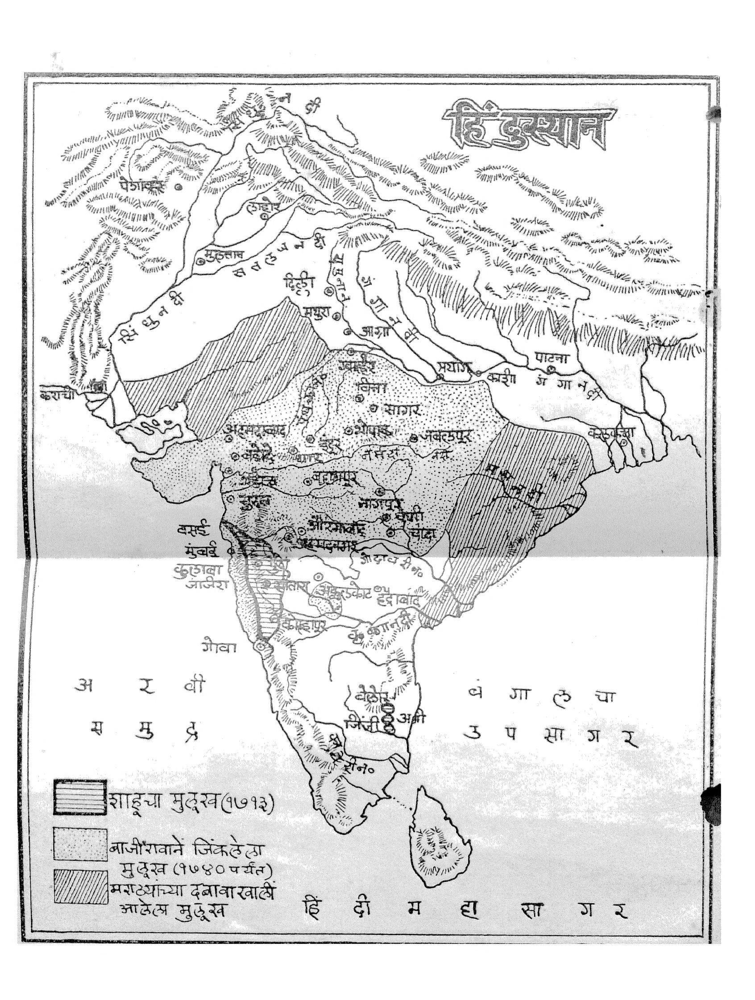

छत्रपती संभाजी महाराजांचे पुत्र व शिवरायांचे नातू, तब्बल १८ वर्षे मुघल कैदेत राहूनही स्वाभिमान न सोडणारे आणि सुटकेनंतर पेशवाईच्या माध्यमातून मराठा साम्राज्याला अखिल भारतीय स्वरूप देणारे द्रष्टे छत्रपती.

शाहू महाराजांनी बाळाजी विश्वनाथ व पुढे बाजीराव पेशव्यांना दिलेल्या मुक्त अधिकारामुळे मराठा सत्तेचा विस्तार थेट अटकेपार आणि बंगालपर्यंत झाला.
शाहू महाराजांचा जन्म १८ मे १६८२ रोजी झाला. ते छत्रपती संभाजी महाराज आणि महाराणी येसूबाई यांचे पुत्र आणि छत्रपती शिवाजी महाराजांचे नातू होते. ऐतिहासिक नोंद
अवघ्या सात वर्षांचे असतानाच, ११ मार्च १६८९ रोजी वडील छत्रपती संभाजी महाराजांचे तुळापूर येथे मुघलांकडून निर्घृण बलिदान झाले — या धक्कादायक घटनेने त्यांचे बालपण अकाली संपुष्टात आले. ऐतिहासिक नोंद
संभाजी महाराजांच्या हत्येनंतर बाल शाहू आणि त्यांची माता येसूबाई मुघलांच्या ताब्यात गेले. त्यानंतर तब्बल १८ वर्षे — जवळजवळ संपूर्ण औरंगजेबाच्या अखेरच्या कारकिर्दीत — शाहू महाराज मुघल छावणीत कैदेत राहिले. ऐतिहासिक नोंद
या दीर्घ बंदिवासातही त्यांना राजेशाही सन्मान व वागणूक दिली जात असे, आणि मुघल दरबारातील राजकारणाची त्यांना जवळून जाण मिळाली. औरंगजेबाची अशी रणनीती होती की भविष्यात शाहूंचा उपयोग मराठा राजघराण्यातील अंतर्गत फुटीसाठी करता यावा. इतिहासकारांचे विश्लेषण
१७०७ मध्ये औरंगजेबाच्या निधनानंतर, त्याचा पुत्र बहादूरशाह पहिला याने शाहू महाराजांना मुक्त केले. मराठा राजघराण्यात अंतर्गत सत्तासंघर्ष निर्माण व्हावा आणि त्यातून मुघल सत्तेला राजकीय लाभ मिळावा, या रणनीतीतूनच ही मुक्तता झाली असल्याचे इतिहासकारांचे मत आहे. इतिहासकारांचे विश्लेषण
मुक्त झाल्यानंतर शाहू महाराज महाराष्ट्रात परतले आणि स्वराज्याच्या गादीवर आपला हक्क सांगू लागले — मात्र तोपर्यंत महाराणी ताराबाईंच्या नेतृत्वाखाली स्वराज्याचा कारभार आधीच प्रस्थापित झालेला होता. ऐतिहासिक नोंद
शाहू महाराजांच्या मुक्ततेनंतर मराठा राजघराण्यात गादीच्या हक्कावरून महाराणी ताराबाई (राजाराम महाराजांच्या पत्नी) आणि शाहू महाराज यांच्यात संघर्ष निर्माण झाला. या संघर्षातून पुढे मराठा सत्तेची विभागणी दोन स्वतंत्र गाद्यांमध्ये झाली — शाहू महाराजांची सातारा गादी आणि कोल्हापूर येथील स्वतंत्र गादी. ऐतिहासिक नोंद
अखेर शाहू महाराजांनी छत्रपती पदावर आपले स्थान बळकट करत सातारा येथे आपली राजधानी स्थापन केली, आणि पुढील काळात मराठा साम्राज्याचे नेतृत्व त्यांच्याकडे राहिले.
गादीच्या संघर्षात व प्रशासनाच्या पुनर्बांधणीत बाळाजी विश्वनाथ भट यांनी शाहू महाराजांना अत्यंत मोलाची साथ दिली. त्यांच्या मुत्सद्देगिरी व प्रशासकीय कौशल्यावर विश्वास ठेवत शाहू महाराजांनी १७१३ मध्ये त्यांची पेशवे (प्रधानमंत्री) पदी नियुक्ती केली. ऐतिहासिक नोंद
हा निर्णय मराठा इतिहासातील एक निर्णायक वळण ठरला — यातूनच पुढे पेशवाईचा उदय झाला, आणि बाळाजी विश्वनाथांचे पुत्र श्रीमंत बाजीराव पेशवे यांच्या नेतृत्वाखाली मराठा सत्तेचा विस्तार अटकेपार व अखिल भारतीय स्तरावर झाला. इतिहासकारांचे विश्लेषण
शाहू महाराजांनी पेशव्यांना प्रशासकीय व लष्करी निर्णयांचे विस्तृत अधिकार दिले, ज्यामुळे मराठा सत्तेचा विस्तार अधिक वेगाने व प्रभावीपणे शक्य झाला.
चौथाई-सरदेशमुखीशाहू महाराजांच्या कारकिर्दीतच शिंदे, होळकर, गायकवाड, भोसले (नागपूर) यांसारखी प्रमुख मराठा सरदार घराणी सामर्थ्यवान होत गेली, ज्यातून पुढे मराठा संघराज्याची (Maratha Confederacy) रचना उभी राहिली.
मराठा संघराज्यशाहू महाराजांच्या ४१ वर्षांच्या प्रदीर्घ कारकिर्दीत — जी मराठा छत्रपतींमधील सर्वाधिक काळ चाललेली कारकीर्द मानली जाते — मराठा सत्तेचा प्रभाव दख्खनपुरता मर्यादित न राहता माळवा, गुजरात, बुंदेलखंड आणि उत्तर भारतापर्यंत विस्तारला. ऐतिहासिक नोंद
हा विस्तार प्रामुख्याने पेशवे व त्यांच्या हाताखालील सेनापतींच्या मोहिमांतून घडला, परंतु त्यामागील अंतिम राजकीय अधिकार व दूरदृष्टी शाहू महाराजांचीच होती, असे अनेक इतिहासकार मानतात. इतिहासकारांचे विश्लेषण
१५ डिसेंबर १७४९ रोजी शाहू महाराजांचे निधन झाले. त्यांच्या पश्चात थेट वारस नसल्याने मराठा राज्यकारभारातील पेशव्यांचे स्थान अधिकच बळकट झाले. तरीही, अठरा वर्षांच्या मुघल कैदेतून परतून, अंतर्गत सत्तासंघर्ष यशस्वीपणे हाताळून आणि पेशव्यांना योग्य संधी देऊन मराठा साम्राज्याला अखिल भारतीय शक्ती बनवण्याचा पाया घालणारे छत्रपती म्हणून शाहू महाराजांचे स्थान मराठा इतिहासात अनन्यसाधारण आहे.